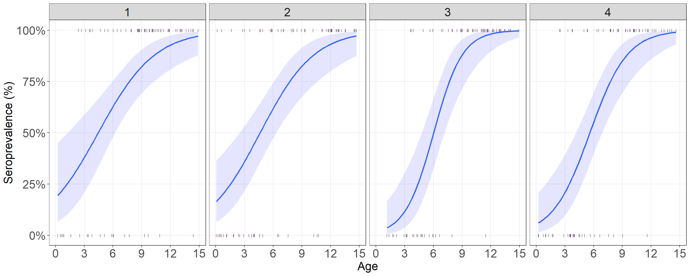
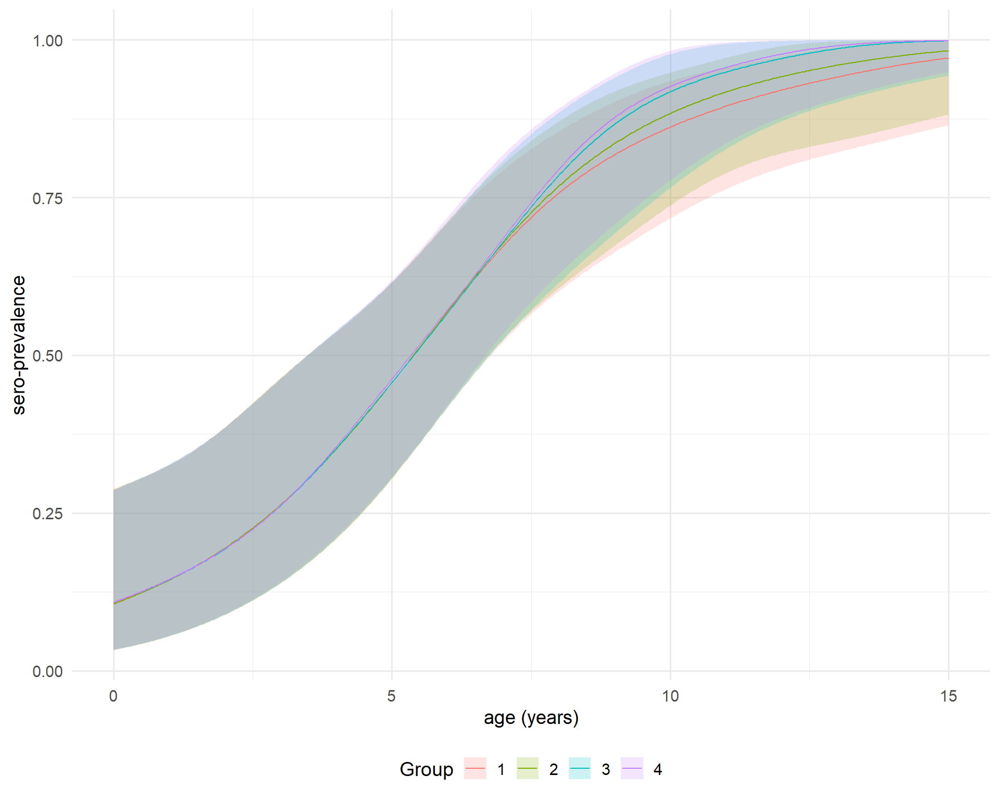
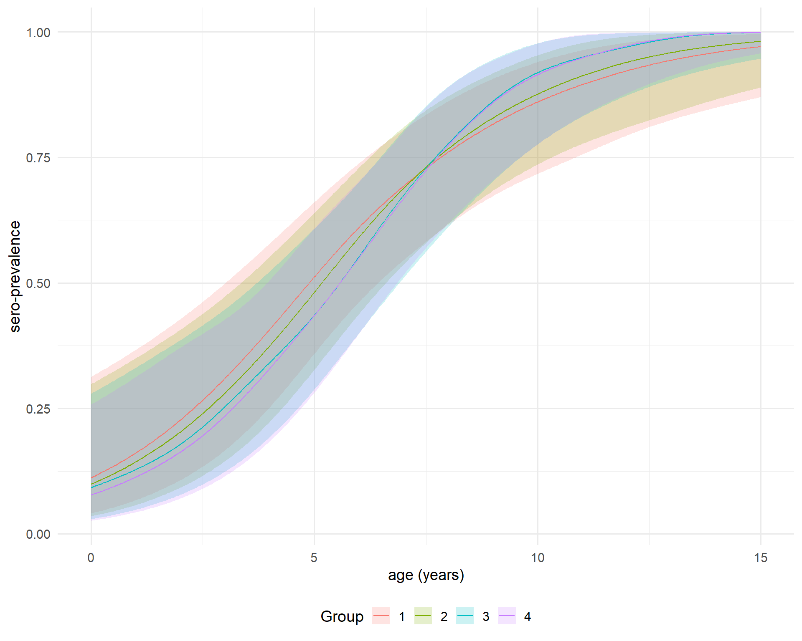
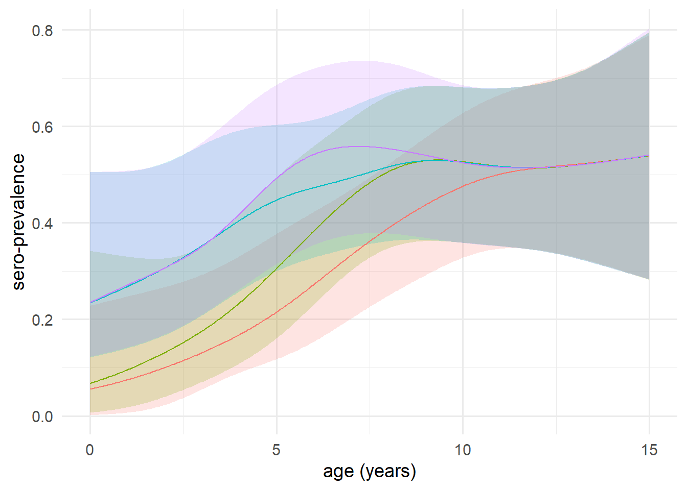
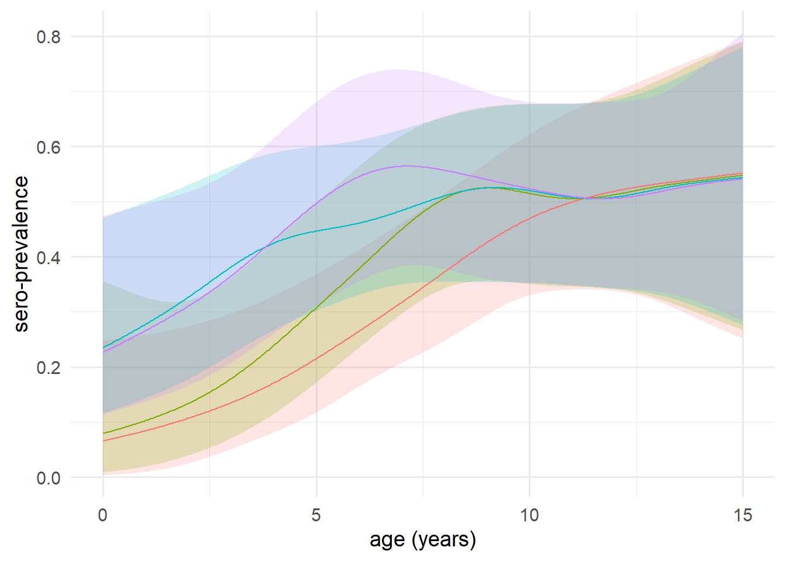

library(lubridate)
library(dplyr)
library(ggplot2)constraint function
Simulation data
set.seed(12345)
# --- Parameters ---
n_rows <- 300
survey_months <- c("2022-12-01", "2023-04-01", "2023-08-01", "2023-12-01")
survey_months <- as.Date(survey_months)
# Function to sample random date within a month
random_date_in_month <- function(start_date, n) {
start <- as.Date(format(start_date, "%Y-%m-01"))
end <- seq(start, by = "1 month", length.out = 2)[2] - 1
as.Date(runif(n, as.numeric(start), as.numeric(end)), origin = "1970-01-01")
}
sigmoid <- function(x, beta0 = -3, beta1 = 0.5) {
1 / (1 + exp(-(beta0 + beta1 * x)))
}
# --- Simulate data ---
simulated_data <- data.frame(
time = unlist(lapply(survey_months, function(m) random_date_in_month(m, n_rows / length(survey_months)))),
age = runif(n_rows, min = 0, max = 15) # random ages
)
# Probability of being seropositive follows a sigmoid in age
simulated_data$prob_sero <- sigmoid(simulated_data$age, beta0 = -3, beta1 = 0.5)
# Simulate binary outcome
simulated_data$seropositive <- rbinom(n_rows, size = 1, prob = simulated_data$prob_sero)
simulated_data <- simulated_data |> mutate(date = as.Date(time),
col_time = rep(c(1:4),each = 75)) |> select(-c(time,prob_sero))Assume the dataset has four columns: age (continuous variable), seropositive status (binary), date of collection, and collection time. This function models the age-seroprevalence profile as a monotonically increasing function of age for each collection time.
head(simulated_data) age seropositive date col_time
1 0.7903247 0 2022-12-22 1
2 8.9798592 1 2022-12-27 1
3 10.6243597 1 2022-12-23 1
4 9.8016099 1 2022-12-27 1
5 8.6612095 1 2022-12-14 1
6 10.1742830 1 2022-12-05 1Unconstrained age profile
simulated_data %>%
ggplot(aes(x = age, y = seropositive)) +
# geom_jitter(height = 0.05)+
geom_point(aes(x = age, seropositive),
shape = "|")+
facet_wrap(~factor(col_time),
ncol = 4)+
geom_smooth(fill = "blue",alpha = 1/10,
method = mgcv::gam,formula = y ~ s(x, bs = "bs"),
method.args = list(method = "REML",link = "logit",
family = "binomial"))+
labs(y = "Seroprevalence (%)",x = "Age")+
scale_x_continuous(breaks = seq(0,15,by = 3), minor_breaks = NULL)+
scale_y_continuous(labels = scales::label_percent(), minor_breaks = NULL)+
coord_cartesian(ylim = c(0, 1))+
theme_bw()+
theme(axis.title.x = element_text(size = 18),
axis.text.x = element_text(size = 18),
legend.position = "none",
plot.tag = element_text(face = "bold", size = 18),
axis.title.y = element_text(size = 18),
axis.text.y = element_text(size = 18),
strip.text.x = element_text(size = 18))
Function
Utils function
age_profile <- function(data,age_values, ci = .95) {
model <- gam(seropositive ~ s(age), binomial, data)
link_inv <- family(model)$linkinv
df <- nrow(data) - length(coef(model))
p <- (1 - ci) / 2
model |>
predict(list(age = age_values), se.fit = TRUE) %>%
c(list(age = age_values), .) |>
as_tibble() |>
mutate(lwr = link_inv(fit + qt( p, df) * se.fit),
upr = link_inv(fit + qt(1 - p, df) * se.fit),
fit = link_inv(fit)) |>
select(- se.fit)
}
shift_right <- function(n, x) {
if (n < 1) return(x)
c(rep(NA, n), head(x, -n))
}Main function
library(purrr)
library(tidyr)
library(magrittr)
library(mgcv)
library(scam)age_profile_constrained <- function(data,ci = .95,aging_correct = F){
mean_collection_times <- data |>
mutate(col_date2 = as.numeric(date)) |>
group_by(col_time) |>
summarise(mean_col_date = mean(col_date2)) |>
with(setNames(mean_col_date, col_time))
age_range <- range(data$age) %>% round()
age_values <- seq(age_range[1],age_range[2], le = 512)
if (aging_correct == F){
outcome <- data |>
group_by(col_time) |>
group_modify(~ .x %>%
age_profile(age_values = age_values,ci = ci) |>
mutate(across(c(fit, lwr, upr), ~ map(.x, ~ rbinom(100, 1, .x))))) |>
ungroup() |>
mutate(collection_time = mean_collection_times[as.character(col_time)]) |>
unnest(c(fit, lwr, upr)) |>
pivot_longer(c(fit, lwr, upr), names_to = "line", values_to = "seropositvty") |>
group_by(age, line) |>
group_modify(~ .x %>%
scam(seropositvty ~ s(collection_time, bs = "mpi"), binomial, .) |>
predict(list(collection_time = mean_collection_times),type = "response") |>
as.vector() %>%
tibble(collection_time = mean_collection_times,
seroprevalence = .)) |>
ungroup() |>
group_by(collection_time, line) |>
group_modify(~ .x %>%
mutate(across(seroprevalence, ~ gam(.x ~ s(age), betar) |>
predict(type = "response") |> as.vector()))) |>
ungroup() |>
pivot_wider(names_from = line, values_from = seroprevalence) |>
group_by(collection_time) |>
group_split()
} else {
dpy <- 365
cohorts <- cumsum(c(0, diff(mean_collection_times))) |>
divide_by(dpy * mean(diff(age_values))) |>
round() |>
map(shift_right, age_values)
age_time <- map2(mean_collection_times, cohorts,
~ tibble(collection_time = .x, cohort = .y))
age_time_inv <- age_time |>
map(~ cbind(.x, age = age_values)) |>
bind_rows() |>
na.exclude()
outcome <- data |>
# Step 1:
group_by(col_time) |>
group_modify(~ .x %>%
age_profile(age_values = age_values, ci = ci) |>
mutate(across(c(fit, lwr, upr), ~ map(.x, ~ rbinom(100, 1, .x))))) |>
group_split() |>
map2(age_time, bind_cols) |>
bind_rows() |>
unnest(c(fit, lwr, upr)) |>
pivot_longer(c(fit, lwr, upr), names_to = "line", values_to = "seropositvty") |>
# Step 2a:
filter(cohort < max(age) - diff(range(mean_collection_times)) / dpy) |>
group_by(cohort, line) |>
group_modify(~ .x %>%
scam(seropositvty ~ s(collection_time, bs = "mpi"), binomial, .) |>
predict(list(collection_time = mean_collection_times),type = "response") |> as.vector() %>%
tibble(collection_time = mean_collection_times,
seroprevalence = .)) |>
ungroup() |>
# Step 2b:
left_join(age_time_inv, c("cohort", "collection_time")) |>
group_by(collection_time, line) |>
group_modify(~ .x %>%
right_join(tibble(age = age_values), "age") |> ### added
arrange(age) |> ### added
mutate(across(seroprevalence,
~ gam(.x ~ s(age), betar) |>
predict(list(age = age_values),type = "response") %>% as.vector()))) %>% ### modified
ungroup() |>
pivot_wider(names_from = line, values_from = seroprevalence) |>
group_by(collection_time) |>
group_split()
}
return(outcome)
}aaa <- age_profile_constrained(simulated_data,ci = .95,aging_correct = T)
aaa2 <- age_profile_constrained(simulated_data,ci = .95,aging_correct = F)Age profile constrained without aging correct
aaa2 %>%
bind_rows() %>%
ggplot(aes(x = age, y = fit,
color = factor(collection_time,labels = c("1","2","3","4")), fill = factor(collection_time,labels = c("1","2","3","4")))) +
geom_ribbon(aes(ymin = lwr, ymax = upr), alpha = 0.2, color = NA) +
geom_line() +
labs(x = "age (years)", y = "sero-prevalence", color = "Group", fill = "Group") +
theme_minimal(base_size = 14)+
theme(legend.position = "bottom")
Age profile constrained with aging correct
aaa %>%
bind_rows() %>%
ggplot(aes(x = age, y = fit,
color = factor(collection_time,labels = c("1","2","3","4")), fill = factor(collection_time,labels = c("1","2","3","4")))) +
geom_ribbon(aes(ymin = lwr, ymax = upr), alpha = 0.2, color = NA) +
geom_line() +
labs(x = "age (years)", y = "sero-prevalence", color = "Group", fill = "Group") +
theme_minimal(base_size = 14)+
theme(legend.position = "bottom")
apply for HFMD serodata
library(stringr)hfmd_sero <- readRDS("D:/OUCRU/hfmd/data/hfmd_sero.rds")
hfmd <- hfmd_sero %>%
as_tibble() |>
mutate(collection = id |>
str_remove(".*-") |>
as.numeric() |>
divide_by(1e4) |>
round(),
col_date2 = as.numeric(col_date),
across(pos, ~ .x > 0))Age profile constrained without aging correct
hfmd_seroo <- hfmd %>% rename(seropositive = pos,
col_time = collection,
date = col_date) %>%
age_profile_constrained(ci = .95,aging_correct = F)
hfmd_seroo %>% bind_rows() %>%
ggplot(aes(x = age, y = fit,
color = factor(collection_time), fill = factor(collection_time))) +
geom_ribbon(aes(ymin = lwr, ymax = upr), alpha = 0.2, color = NA) +
geom_line() +
labs(x = "age (years)", y = "sero-prevalence", color = "Group", fill = "Group") +
theme_minimal(base_size = 14)+
theme(legend.position = "hide")
Age profile constrained with aging correct
hfmd_seroo2 <- hfmd %>% rename(seropositive = pos,
col_time = collection,
date = col_date) %>%
age_profile_constrained(ci = .95,aging_correct = T)
hfmd_seroo2 %>% bind_rows() %>%
ggplot(aes(x = age, y = fit,
color = factor(collection_time), fill = factor(collection_time))) +
geom_ribbon(aes(ymin = lwr, ymax = upr), alpha = 0.2, color = NA) +
geom_line() +
labs(x = "age (years)", y = "sero-prevalence", color = "Group", fill = "Group") +
theme_minimal(base_size = 14)+
theme(legend.position = "hide")